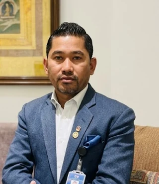
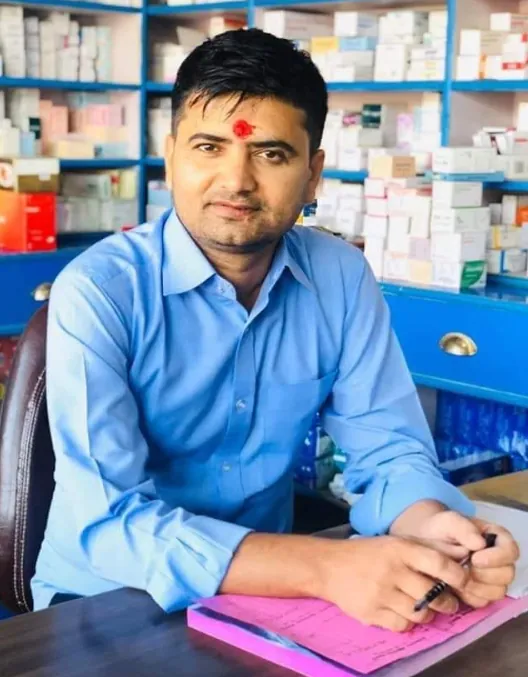

01
Internal Medicine
General adult medicine, chronic disease review and coordinated specialist care.
Tandi Ratnanagar Polyclinic brings specialist consultations, diagnostic services and an integrated pharmacy together in Tandi, Ratnanagar Municipality.
Located on the Main Road in Tandi, Tandi Ratnanagar Polyclinic Pvt. Ltd. provides access to specialist medical consultation, pathology, diagnostic imaging and pharmacy services under one roof.
Our multidisciplinary team supports patients and families across eastern Chitwan with clearly communicated appointments, practical access and professional clinical services.


Review the professional qualifications, NMC registration numbers and current consultation schedules of specialists at Tandi Ratnanagar Polyclinic Pvt. Ltd. Please call the clinic to confirm availability before travelling.
At Tandi Ratnanagar Polyclinic Pvt. Ltd., access is organized across specialist consultation, diagnostics and supporting services. Ask the reception team about department schedules.
General adult medicine, chronic disease review and coordinated specialist care.
Medical assessment and cardiac consultation through the specialist schedule.
Evaluation and management of musculoskeletal conditions and trauma.
Medical care for children, including pediatric and neonatal consultation.
Consultation for ear, nose, throat and related head and neck conditions.
Specialist assessment of skin, hair, nail and venereal conditions.
Women’s health, obstetric and gynecological consultation.
Urology, general surgery, gastrointestinal surgery and neuropsychiatry access.
Diagnostic categories at Tandi Ratnanagar Polyclinic Pvt. Ltd. are presented for orientation. Current availability, preparation requirements and charges can be confirmed directly with the laboratory.
Pathology services organized by the kind of investigation your clinician may request.
Diagnostic services available through scheduled clinical support.
Radiology schedules include rotational appointments at 9:00 AM, 1:00 PM and 3:00 PM. Please confirm before arrival.
Capital Pharma, the integrated pharmacy of Tandi Ratnanagar Polyclinic Pvt. Ltd., supports continuity after consultation with access to medicines, selected vaccines and family planning supplies. The pharmacy is also identified in the clinic’s institutional information as a National TB Control Program referral site.
A closer look at Tandi Ratnanagar Polyclinic Pvt. Ltd.’s consultation rooms, diagnostics, pharmacy and clinical team at work.
Verified institutional information about Tandi Ratnanagar Polyclinic Pvt. Ltd. is presented without overstating what each recognition represents.
Recognition reported as conferred by Health Khabar / Swasthya Darpan Media Network for regional healthcare delivery.
Ratnanagar Municipality Ward No. 2 recognition dated December 30, 2023 for health camps supporting senior citizens and persons with disabilities.
Institutional information identifies the pharmacy as a National TB Control Program referral site.
USAID Momentum Sangini program participation for family planning counseling and contraceptive distribution.
National Health Training Center certification information for adolescent sexual and reproductive health clinical management.
Corporate membership information for Junior Chamber International and Lions Club International Mid-Nepal.
Straight answers to what patients in Tandi, Ratnanagar and across Chitwan usually want to know before a visit.
Tandi Ratnanagar Polyclinic Pvt. Ltd. is on the Main Road in Tandi, Ratnanagar Municipality, Chitwan — about 500 metres south of Bakulahar Ratnanagar Hospital. We bring specialist consultation, diagnostics, imaging and an on-site pharmacy together under one roof, with daily OPD hours and an emergency contact line.
Yes. Tandi Ratnanagar Polyclinic has served the Tandi community since 2004 and is registered as a healthcare institution (Co. Reg. No. 14126). It functions as a polyclinic and small hospital with 22 listed specialists across 11 clinical departments, a laboratory, imaging services and a pharmacy, all in Tandi.
A clinic usually covers one or two specialties, while a polyclinic brings many specialists and departments together in one place. That is what Tandi Ratnanagar Polyclinic offers — internal medicine, orthopedics, pediatrics, ENT, dermatology, obstetrics and gynecology, radiology, urology and general surgery are all available at the same Tandi location.
Our Internal Medicine department has several consultants, including Dr. Pramod Poudel, Dr. Gauri Ram Mahato, Dr. Hari Krishna Dhakal and Dr. Sandesh Rauniyar. See the Doctors section above for their qualifications, NMC registration numbers and current consultation schedules.
Use the search and department filters in the Doctors section above to compare specialists by qualification, NMC registration and consultation schedule, then book the one who fits your needs — no single doctor is right for every patient, so we make that information available up front rather than telling you who is “best.”
Yes. Dr. Dipendra Kumar Mallik consults in General and Gastro Surgery, and our Orthopedics & Traumatology team (Dr. Suraj Bidari, Dr. Prakash Kandel and Dr. Rabindra Adhikari) handles musculoskeletal surgery and trauma care, all at our Tandi location.
Tandi Ratnanagar Polyclinic offers physiotherapy and rehabilitation services on site — see “The clinic” section above for a look at the physiotherapy space, or call the clinic directly to check current availability.
Click “Book an appointment” anywhere on this page, fill in your name, phone, department and (optionally) preferred doctor and date. It opens WhatsApp with your details pre-filled so our reception team can confirm your visit directly — or you can call us at 056-561282, 056-561272 or 9855080767.
OPD runs daily: mornings until 9:30 AM, afternoons 1:00–3:00 PM and evenings 3:00–7:00 PM, with department-specific schedules listed under each doctor. Our emergency contact line is available daily — call 9855080767 for urgent needs.
The clinic is on the East-West Highway in Tandi, approximately 500 metres south of Bakulahar Ratnanagar Hospital.
Current promotional terms are subject to the validity period and conditions published by the clinic. Please confirm at billing before relying on this offer.
Submitting this form opens WhatsApp with your details pre-filled, sent directly to our reception number for confirmation. You can also call the clinic directly for immediate assistance.